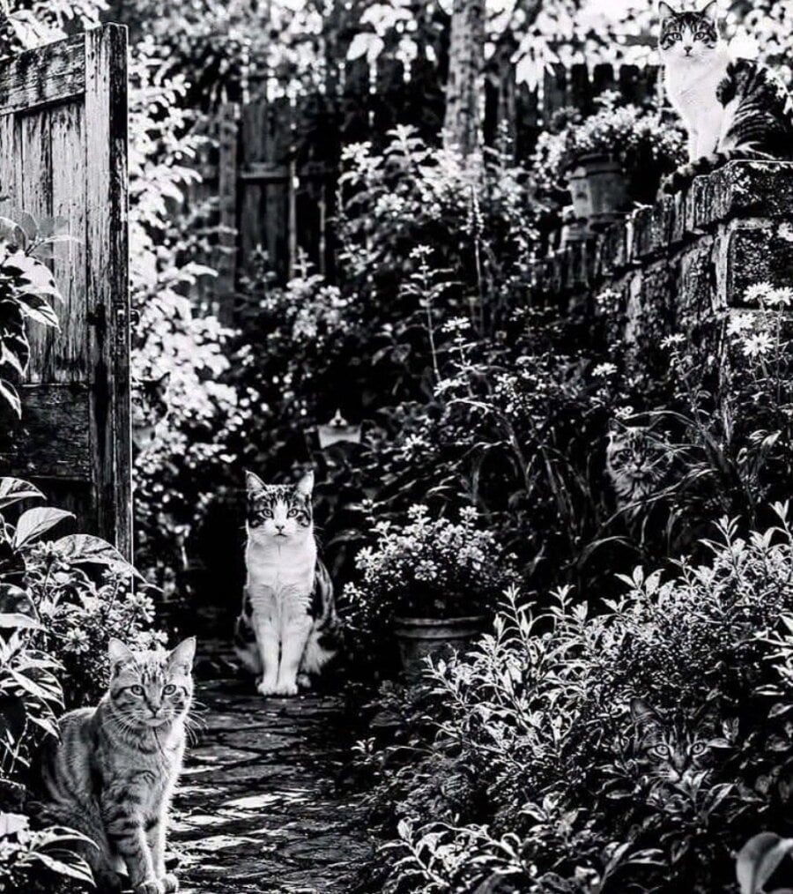

고양이는 몇 마리인가?
논란이라고
1마리 아니야? 하다가 다시 볼 때마다 1마리씩 찾아짐;

고양이는 몇 마리인가?
논란이라고
1마리 아니야? 하다가 다시 볼 때마다 1마리씩 찾아짐;
난 7마리밖에안보이네
정답봤는데 8마리째는 좀 억진데... 중앙고양이 왼편, 나무문 제일아래 문에 붙어서 정면 보고있따는데 어케보면 고양이긴한데 다른것처럼 뚜렷하게 고양이같진 않음
원본이 칼라라서 그럼
8
https://www.dogdrip.net/734141357
비밀번호 알려줘
풀엇삼
7
8이네 컬러버전 보면, 8임
한마리는 흑백이라서 수풀이랑 구분이 안가네 저래놓으면 어케 찾아 ㅋㅋ 물뿌리개인줄 알았잖아
아니 뭔 올드보이도 있냐.
7마리까진 찾응
아오 8마리째가 사기잖아 ㅋㅋㅋㅋ
무서워
7마리까진 찾음
13마리네
8
마지막 한마리는 좀ㅋㅋㅋ 알고봐도 안보이는데?
7마리
6마리 밖에 안 보이는데?
다시 보니까 2마리 더 찾았다
6
8마리째가 도저히 안보이는데..